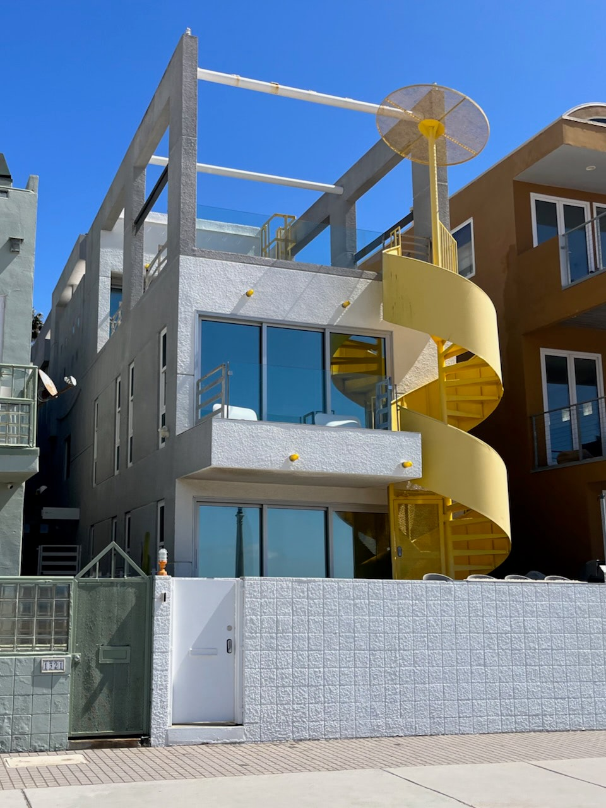

This is it. This is the skateboard trail. Over twenty miles of blissful sidewalk surfing down the beaches where it was invented. Passing through iconic boardwalks that you see on postcards, in movies, all throughout pop culture. My good friend Alex and I rode our longboards from Muscle Beach up to the northern terminus in Pacific Palisades in April 2005, and that’s when I got hooked on this whole board trip idea. A few weeks shy of 18 years later, I returned to do the whole thing.
The coastal mountains of Malibu and the rolling hills of Palos Verdes create natural boundaries for this trail. So you start at Will Rogers Beach in Pacific Palisades, with Nobu and all the celebrity hangouts you’ve heard of on Bravo behind you, and the Santa Monica pier beckoning in the distance. It’s standard beach boardwalk path, concrete weaving between parking lots or public bathrooms and flat expanses of sand. Not that standard means boring, more that you should expect a lot of this.
Then you reach the rows of beachfront homes before getting to the heart of Santa Monica. Ever since my first trip to this beach (when my brother Kevin recognized Kevin Bacon and went up to talk to him – two degrees), I’ve been drawn to the house with the external spiral staircase painted bright yellow. It blew my mind when it appeared in the opening credits of GTA V. A proper kickoff to the day, a mile or two in. Who lives here? How do they deal with the masses of humanity outside their living room window every day? How do they pull out of their garage directly onto the PCH every time they need groceries?
These questions linger as you proceed underneath the Santa Monica pier, away from the distracting lights and sounds of the roller coaster, ferris wheel, and hordes of people. And then the picturesque popular stretch from the pier through Venice, weaving between tagged public facilities, a skatepark where I would never venture myself, a boardwalk of exactly the kind of tourist trap shops you’re imagining, and the outdoor fitness area of world-famous Muscle Beach. I was riding in the early afternoon after a morning of 40° rain, so even though the sun was out, there weren’t that many guns out.
When you hit the Venice Beach pier, the trail temporarily ends and you have to ride in the bike lane of Washington Blvd until the trail picks up again to go around Marina del Rey. This part is somewhat shaded by deciduous trees and devoid of sand, a nice palate cleanser before going through the Ballona Wetlands and out on the jetty to get back to the beach.
And after a brief return of paved trail separating small but fancy homes from the sand, you reach the airport. This was one of the first things I remember exploring in Google Earth, the wasteland of a planned community between LAX and the ocean. The streets are laid out in a neat little neighborhood grid, without any homes. You can only imagine how impossible it would have been to live under the constant air traffic, as loud as it is on the beach. I clambered up the coastal cliff to see if the area was open for exploration and of course it isn’t. We still have to take off our shoes and throw away our water bottles before getting on a plane, they’re not going to let some helmet-wearing fool like me muck around in the open space next to the runways.
You almost think the city planners figured that if a whole neighborhood was lost to the airport, they may as well keep putting the boring stuff on the surrounding land. So there’s a mile or so of water facilities and power plants to pass afterward, before returning to the final segment of proper boardwalk paths through three charming beach towns: Manhattan, Hermosa, and Redondo. There are a couple notable stretches, like briefly detouring inland to stay on the sidewalks through Redondo Beach, and then cutting back toward the coast and going through the parking garage (still on a sectioned-off and signed path!) of the marina.
Then it ends unceremoniously at a lifeguard station in Torrance County Beach. There’s no sign, nothing except the mile marker of 0.0 painted on the pavement. I picked up my board and walked up the steep exit ramp to figure out a way back to the city via car, in true Los Angeles fashion.